资源
配置
Download Unity Editor and Create a New Project
安装 Unity Hub 3.3.0、Unity 2021.3.11
Unity Hub 下，选择 2021.3.11 版本，新建一个 3D (HDRP) 项目，把 Version Control 关了：
Perception 仅支持 HDRP，不适用于 URP 或 遗留项目！
{kind=link}
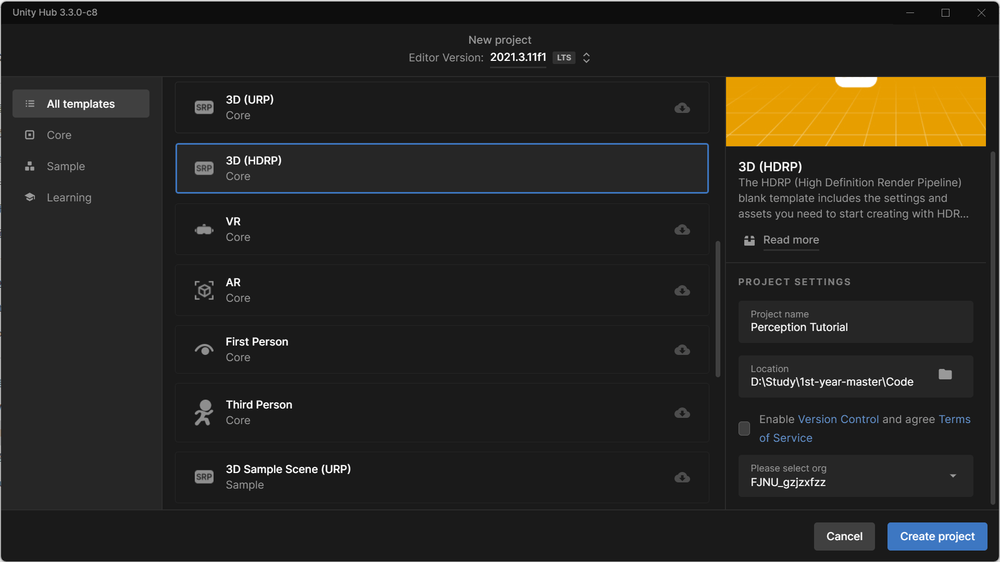
Download the Perception Package and Import Samples
Unity 下，Window-Package Manager-+-Add package from disk..，安装仓库里的内容，等待。
您可能会收到一个关于 Burst 包版本的弹出错误。取消弹出窗口。然后，您将看到新下载的 Perception 软件包在 Package Manager 中自动选择。
装完后，如右侧面板所示，其中一个捆绑包命名为 Tutorial Files，这是完成本教程所必需的。它由一些通用的 前景 foreground 和 背景 background 对象、随机化器 randomizers、着色器 shaders 以及一些其它元素。前景 foreground 对象是最终机器学习模型尝试检测的对象，**背景 background **对象将被放置在背景中作为模型的干扰物。
{kind=link}
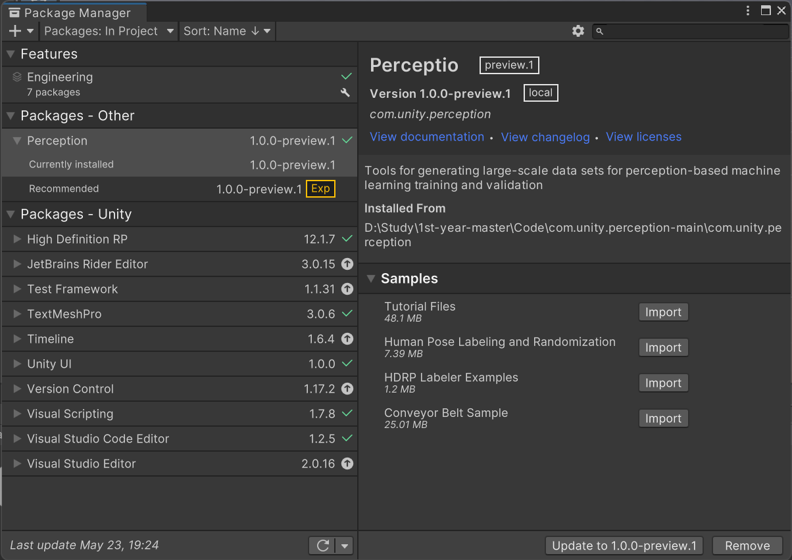
导入 Tutorial Files：
{kind=link}
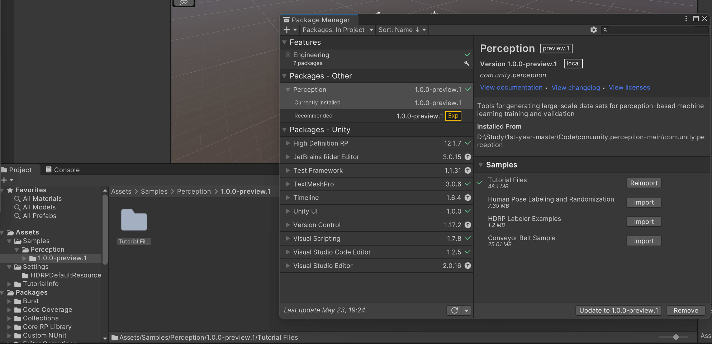
Setup a Scene for Your Perception Simulation
新建文件夹 Assets/Sceces，在此创建一个新场景TutorialScene，打开之，调整其 Main Camera：
{kind=link}
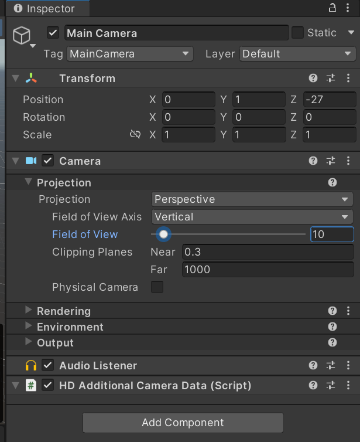
在 Directional Light 中，把阴影关了：
{kind=link}
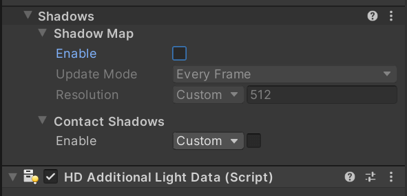
在 Main Carmera 里添加组件 Perception Camera
{kind=link}
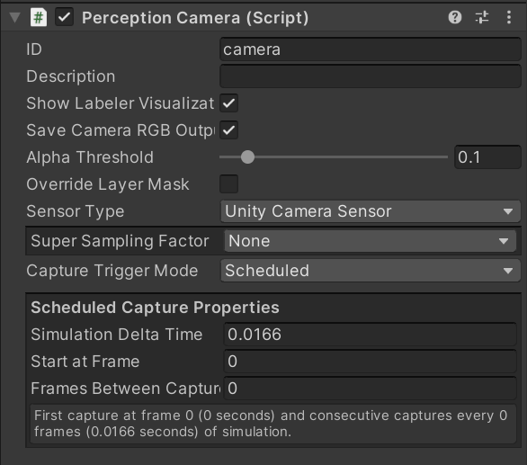
在 Edit-Project Settings-Editor 中，把 Asynchronous Shader Compilation 异步着色器编译给关了：
{kind=link}
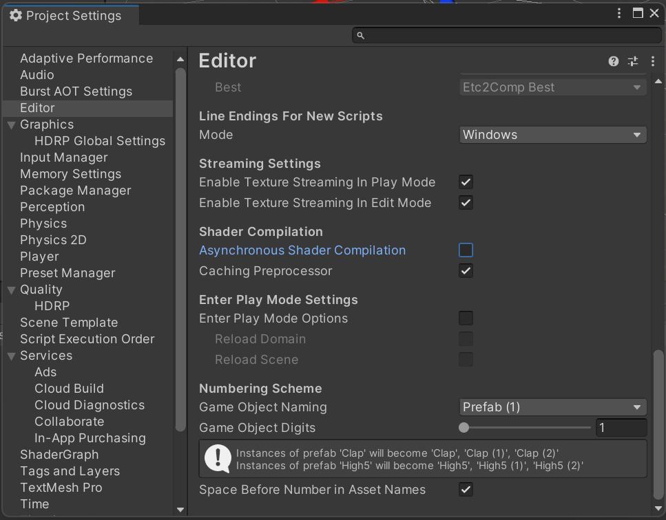
在项目中搜索 HDRP High Fidelity，把 Lit Shader Mode 设为 Both：
{kind=link}
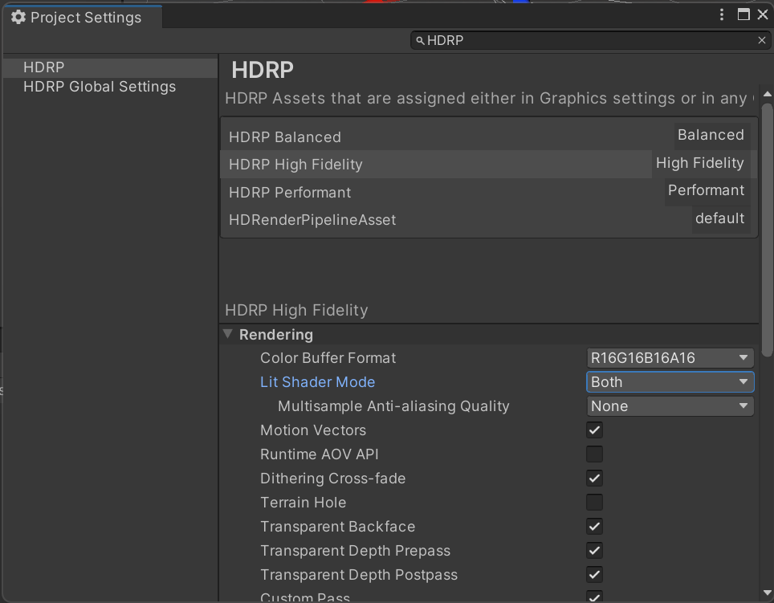
对于 Main Camera 下的组件 Perception Camera，Camera Labelers 列表中可以加载希望生成的 GroundTruth 标记：
{kind=link}
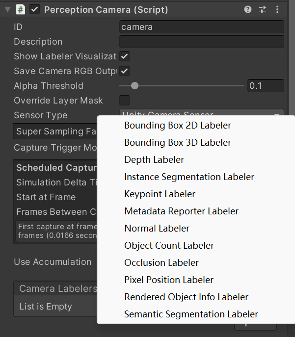
- Bounding Box 2D Labeler
- 2D 边界框
- Bounding Box 3D Labeler
- 3D 边界框
- Depth Labeler
- 深度
- Instance Segmentation Labeler
- 实例分割标记
- Keypoint Labeler
- 关键点标签
- Metadata Reporter Labeler
- 元数据
- Normal Labeler
- 法线
- Object Count Labeler
- 对象计数
- Occlusion Labeler
- 遮挡
- Pixel Position Labeler
- 像素位置
- Rendered Object Info Labeler
- 对象信息（像素计数和 ID）
- Semantic Segmentation Labeler
- 语义分割
添加：
{kind=link}
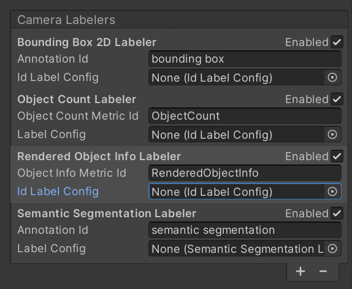
当 Show Labeler Visualizations 打开时，在模拟运行时实时显示可视化效果。
Setup a Scene for Your Perception Simulation
现在是时候告诉每个添加到 “Perception Camera” 的 Labeler 它应该在生成的数据集中标记哪些对象了。例如，如果您的工作流程旨在生成检测椅子的 Ground Truth，则 Labeler 需要知道他们应该在场景中查找标记为“chair”的对象。椅子也应该贴上“chair”的标签，以便 Labelers 可以看到它们。我们现在将学习如何设置这些配置。
您会注意到，每个添加的 Labeler 都有一个“标签配置”字段。通过在此处添加标签配置，您可以指示 Labeler 只在场景中查找具有特定标签的对象，而忽略其余标签。为此，我们首先创建标签配置。
Create-Perception-ID Label Config，并将其重命名为 TutorialIdLabelConfig。
{kind=link}
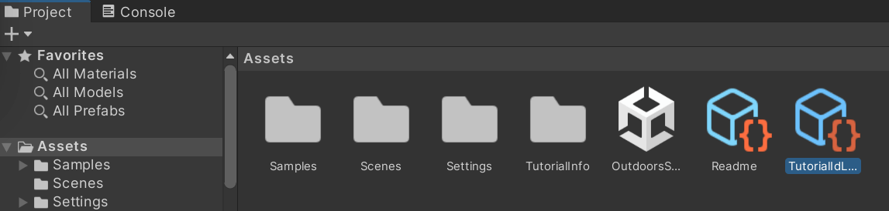
在本教程中，我们将生成用于检测 10 种日常杂货的合成数据。当您从 Package Manager 导入教程文件时，这些杂货被导入到您的项目中，并且位于文件夹
Assets/Samples/Perception/1.0.0-preview.1/Tutorial Files/Foreground Objects/Phase 1/Prefabs/中。
我们创建的标签配置（
TutorialIdLabelConfig）属于IdLabelConfig类型，与我们连接到Perception Camera的四个贴标机中的三个兼容。这种类型的标签配置将每个标签与一个唯一的数字 ID 相关联。然而，“SemanticSegmentationLabeler”（语义分割标签）需要一种不同的标签配置，该配置将每个标记与一种唯一的颜色而不是数字 ID 相联系。这是因为该贴标机的输出是一组图像，其中每个可见的前景对象都被绘制为唯一的颜色。
Create-Perception-Semantic Segmantation Label Config，并将其重命名为 TutorialSemanticSegmentationLabelConfig。
在 Main Camera-Perception Camera 组件下，设置好 Camera Labelers：
{kind=link}
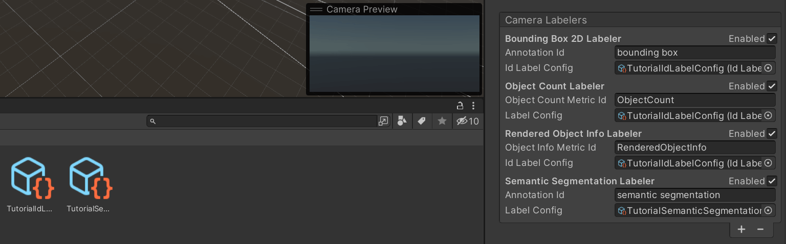
打开 Assets/Samples/Perception/1.0.0-preview.1/Tutorial Files/Foreground Obiects/Phase 1/Prefabs/drink-whippingcream lucerne.prefab，这个 Prefab 包含一个特有组件 Labeling。提供了多种为对象分配标签的方法，可以选择 Use Automatic Labeling，也可以手动添加标签。
{kind=link}
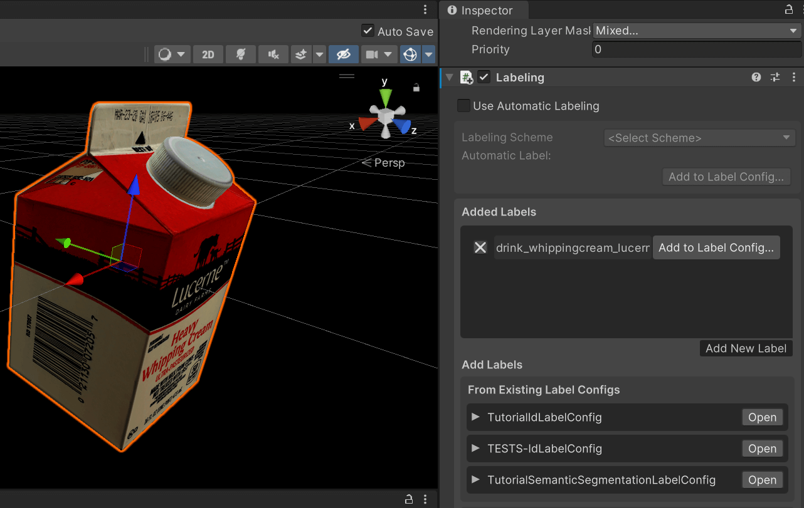
对于 automatic labeling，您可以从多种标记方案中进行选择，例如 Asset 名称或文件夹名称。如果您选择 manual（手动）路线，您可以键入标签，从项目中的任何标签配置中添加标签，或者根据预设的名称和路径从建议的标签列表中添加。
每个对象都可以指定多个标签，因此对于具有不同标签配置的 Labeler 来说，这些对象会显示为不同的对象。例如，您可能希望您的语义分割 Labeler 将所有牛奶盒检测为“dairy_product”，而您的 Bounding Box Labeler 仍然可以区分不同类型的乳制品。为了实现这一点，您可以在所有乳制品中添加“dairy_product”标签，然后在用于语义分割的标签配置中，只添加“dairy_product”标签，而不添加任何特定的产品或品牌名称。
一旦您有了“.fbx”格式的 3D 模型，Perception 软件包可以让您从多个模型中快速创建预制。只需选择所有模型，然后从顶部菜单栏中选择 Assets→Perception→Create Prefabs from Selected Models。新创建的预制件将被放置在与其对应模型相同的文件夹中。
使用自动标签标记所有前景对象的例子：
选择 Assets/Samples/Perception/1.0.0-preview.1/Tutorial Files/Foreground Objects/Phase 1/Prefabs 下所有的文件，在 Labeling 组件下打开 Use Automatic Labeling for All Selected Items，在 Labeling Scheme 里选择 Use asset name（标签名即为文件名）。
{kind=link}
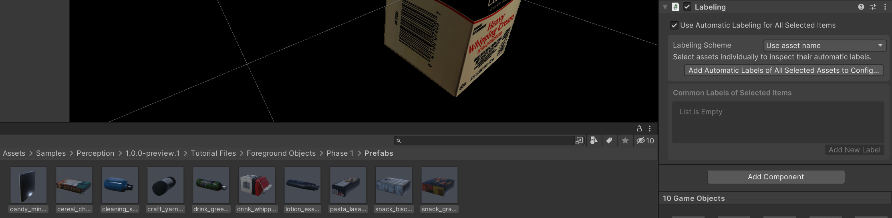
点击 Add Automatic Labels of All Selected Assets to Config...，弹出 Manage Labels 窗口，点击 Add All Labels把这些标签添加给 TutorialIdLabelConfig 和 TutorialSemanticSegmentationLabelConfig。
{kind=link}
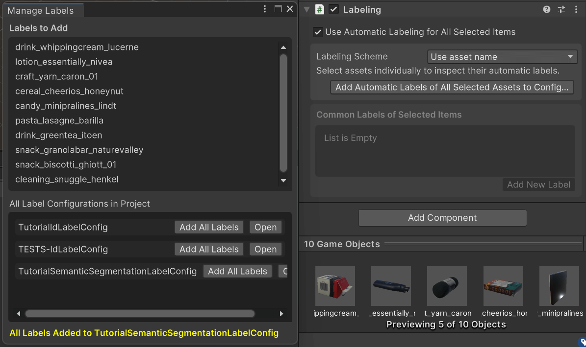
还可以通过点击 Open 查看已添加标签的属性：
{kind=link}
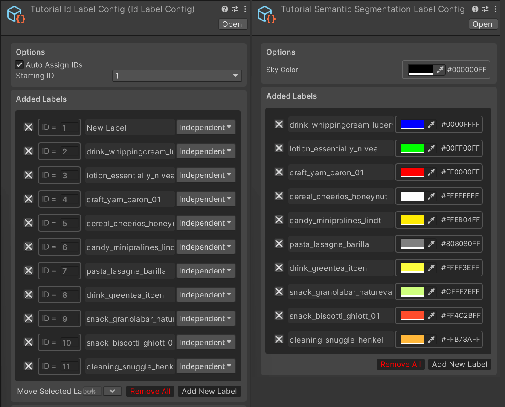
由于我们在这里使用了自动标签，并将它们添加到我们的配置中，因此我们确信配置中的标签与对象的标签匹配。如果您决定向对象和配置添加手动标签，请确保使用完全相同的标签，否则，使用这些配置的 Labeler 将不会检测到在配置中找不到匹配标签的对象。
既然我们已经标记了所有 foreground objects 并设置了标签配置，那么让我们简单地测试一下。
将预制体 drink_whippingcream_lucerne.prefab 添加到游戏场景中，开跑！由于在 Perception Camera 中开启了可视化功能，因此看到放置的对象周围绘制了一个边界框，对象本身也会根据 TutorialSemanticSegmentationLabelConfig 里的内容进行着色。
{kind=link}
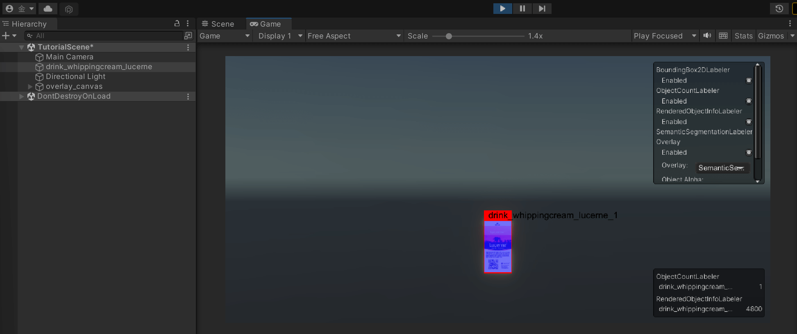
Set Up Background Randomizers
Perception 的核心组成部分之一是对模拟的各个方面进行随机化，以便在生成的数据中引入足够的变化。要开始随机化模拟，需要在 scene 中添加
Scenario。Scenarios通过协调添加到它们的所有Randomizers组件来控制模拟的执行流程。Perception 软件包附带了一组有用的 Randomizers，可以让你快速将前景对象放置在场景中，生成不同的背景，并随着时间的推移随机化模拟的各种参数，如对象的位置、比例和旋转，相机视图中对象的数量等。Randomizers通过协调多个Parameters来实现这一点，其本质上定义了最细粒度的随机化行为。
在场景中新建一个空对象，改名为 Simulation Scenario，给这个对象添加组件 Fixed Length Scenario（定长 Scenario）。
每个
Scenario执行若干 iteration，并且每个 iteration 持续若干 frames。这些是您可以利用的时间元素，以便自定义您的场景和随机化的时间。您将在本教程的第 2 阶段学习如何配置迭代和框架。目前，我们将使用Fixed Length Scenario，这是一种特殊的 Scenario，在每次 iteration 期间运行固定数量的 frames。根据我们的经验，这种设置对于许多常见的用例来说已经足够了。请注意，在任何给定的时间，您的 Scene 中只能有一个活动 Scenario！
如下图所示，Scenario 被设为 100 次 iteration，每次 iteration 将运行 1 frame。但这只是一个空的 Scenario，让我们添加一些 Randomizers。
{kind=link}
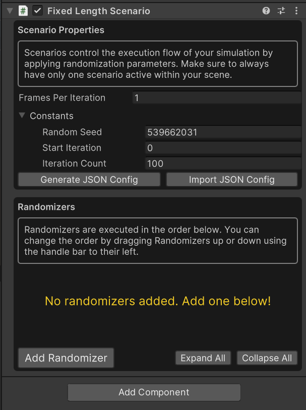
点击 Add Randomizer，添加 BackgroundObjectPlacementRandomizer。
{kind=link}
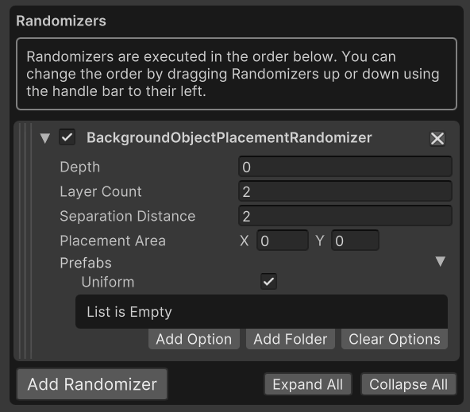
该随机化器使用泊松圆盘采样从给定区域中选择随机位置，并在所选位置生成随机选择的 Prefabs（从给定列表中）的副本。我们将使用该组件生成一个 background，该 background 将分散我们最终的目标检测机器学习模型的注意力（干扰作用）。
转到文件夹：Assets/Samples/Perception/1.0.0-preview.1/Tutorial Files/Background Objects/Prefabs/
{kind=link}
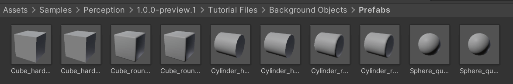
在组件 BackgroundObjectPlacementRandomizer 中，设置 Depth = 0，Layer Count = 2，Separation Distance = 0.5，Placement Area = (6, 6)。
开跑！
出于性能原因，建议在准备好生成大型数据集后（从
Perception Camera的 Inspector 视图）把Show Labeler Visualization给关了。
{kind=link}
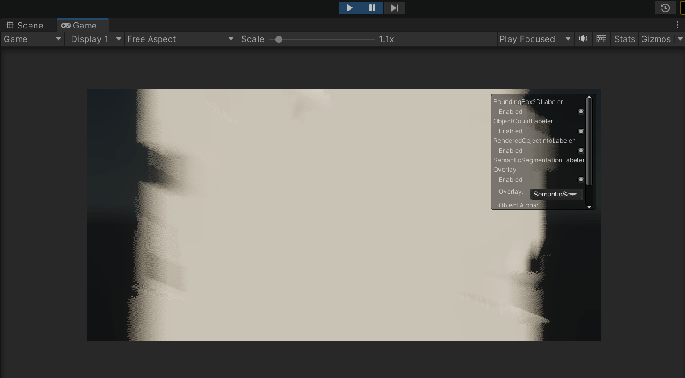
HDRP 项目默认启用了运动模糊和许多其他后期处理效果。要禁用运动模糊或任何其他效果，请执行以下步骤：
新建一个 GameObject，并添加 Volume 组件，在 Profile 里按下按钮 New，按下 Add Override，选择 Motion Blur，应用 Intensity 并设为 0。
{kind=link}
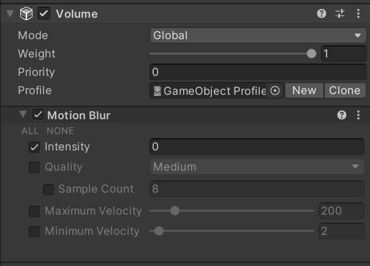
在 Simulation Scenario 下的组件 Simulation Scenario，继续添加组件：TextureRandomizer、HueOffsetRandomizer、RotationRandomizer。
{kind=link}
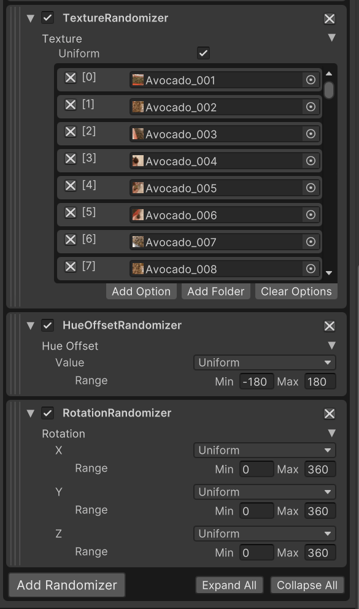
为了确保我们的 background Prefabs 受到 TextureRandomizer 的影响，我们需要确保它们附加了 TextureRandomizerTag。
同样地，添加 HueOffsetRandomizerTag 和 RotationRandomizerTag。
{kind=link}
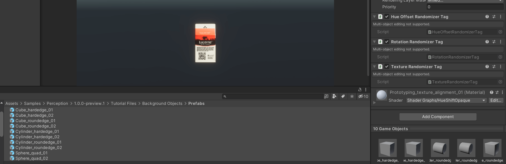
开跑！
{kind=link}
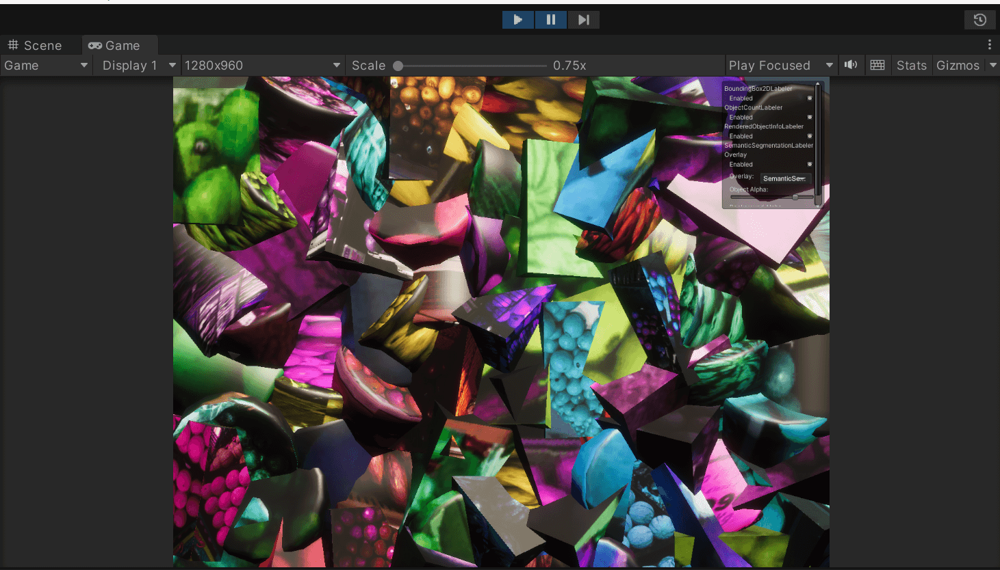
Set Up Foreground Randomizers
往 Simulation Scenario 里的 Simulation Scenario 组件添加 ForegroundObjectPlacementRandomizer，点击 Add Folder，选择文件夹 Assets/Samples/Perception/1.0.0-preview.1/Tutorial Files/Background Objects/Prefabs/，设置参数 Depth=-3，Separation Distance = 1.5，Placement Area = (5,5)。
{kind=link}
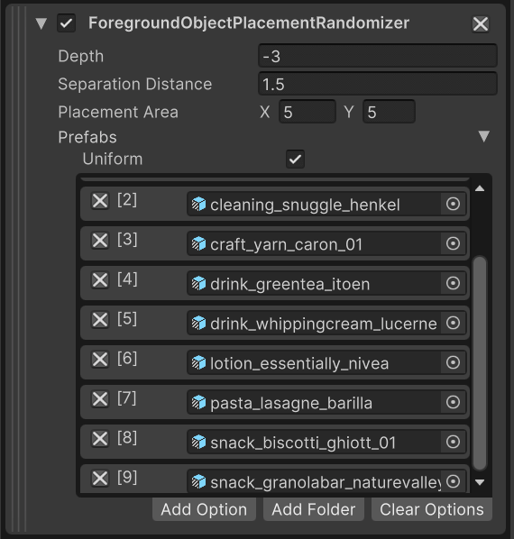
这个 Randomizer 使用与我们用于 backgrounds 的算法相同的算法；然而，它是在一个单独的 C# 类中定义的，因为您只能将 每种类型的 Randomizer 中的一个添加到您的 Scenario 中。因此，这是我们区分如何处理背景和前景对象的方法。
给 Assets/Samples/Perception/1.0.0-preview.1/Tutorial Files/Foreground Obiects/Phase 1/Prefabs 里的所有 Prefabs 里添加组件 RotationRandomizerTag。
{kind=link}
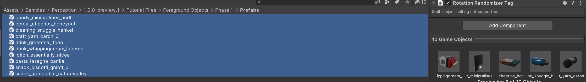
把 Simulation Scenario 里的 Simulation Scenario 组件的ForegroundObjectPlacementRandomizer 拖到 RotationRandomizer 之上：
{kind=link}
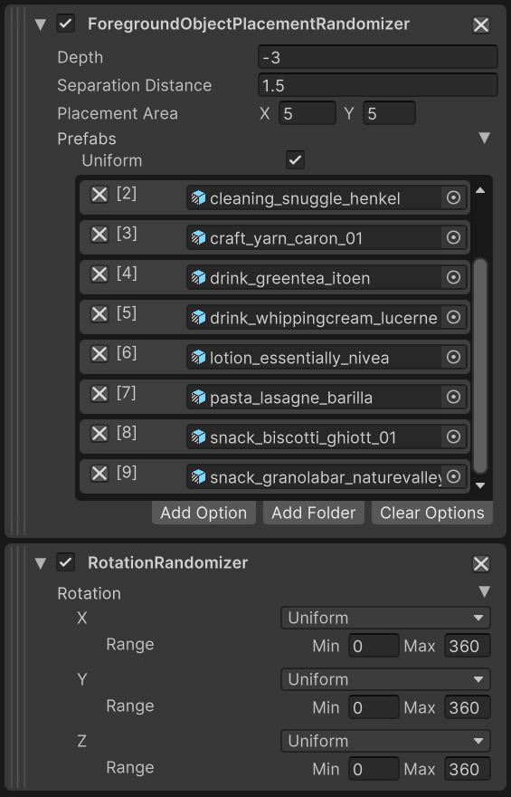
开跑！
{kind=link}
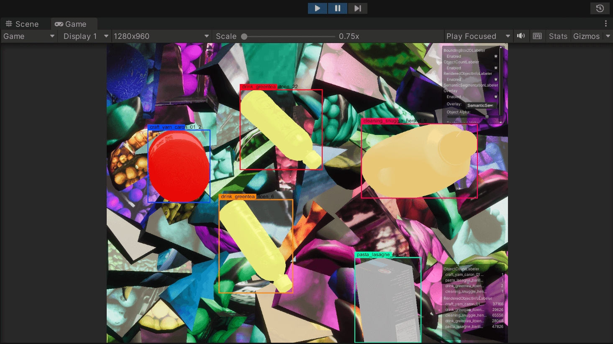
Inspect Generated Synthetic Data 检查生成的合成数据
默认情况下，数据集将以 SOLO 格式生成。
Edit-Project Settings-Perception，可以看到之前生成的数据集的位置 Base Path，打开看看都生成了个什么玩意：
{kind=link}
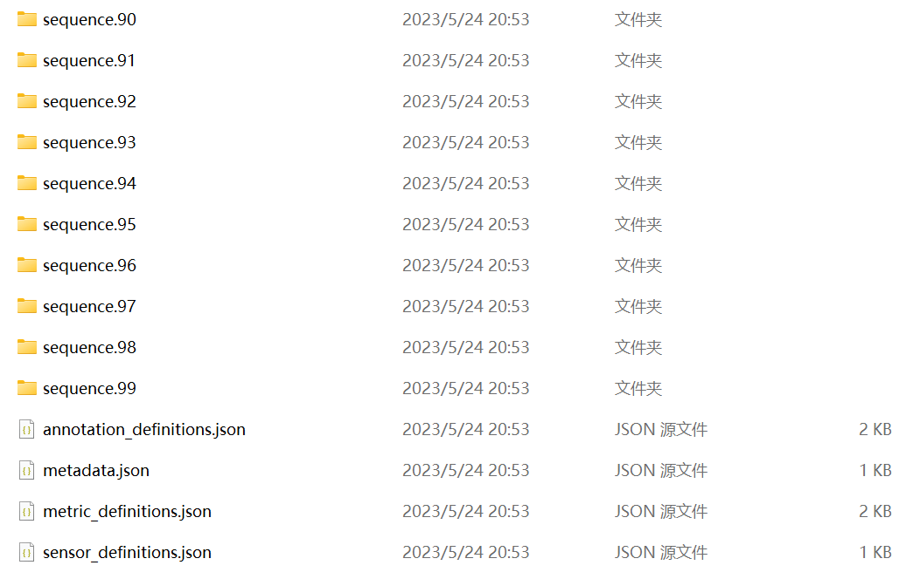
对于每个 sequence：
{kind=link}
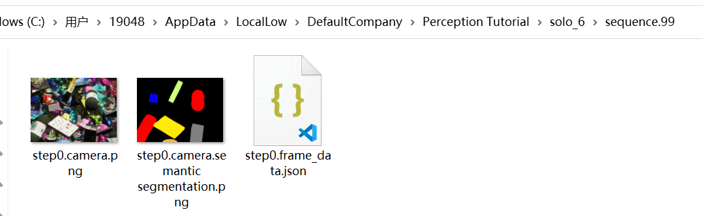
输出数据集包括关于场景中活动传感器（目前只有一个，是 RGB camera）的信息，以及所有
activate Labelers生成的 GroundTruth。
对于 step0.frame_data.json，里面包括：
-
labelId：在 Labeler 的标签配置中分配给该对象标签的数字 ID -
labelName：对象的标签，例如candy_miniparlines_lindt -
instanceId：对象的实例 ID -
origin：对象边界框的左上角坐标（从图像左上角开始测量） -
dimension：对象边框的宽度和高度
要进一步分析数据集并验证统计数据，如每帧中的对象数量等，您可以使用 Pysolotools。此外，您还可以使用 Voxel51 可视化数据集。查看链接页面，了解如何在 SOLO 数据集上使用这些工具的指南。
Perception 教程的第一阶段到此结束。在下一阶段，我们将深入研究随机化代码，并学习如何构建自定义随机化器！